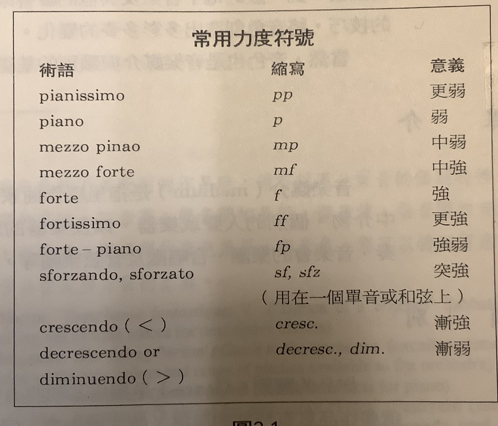
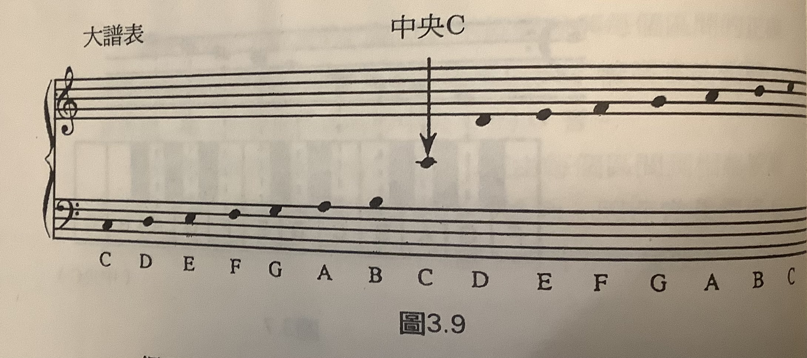
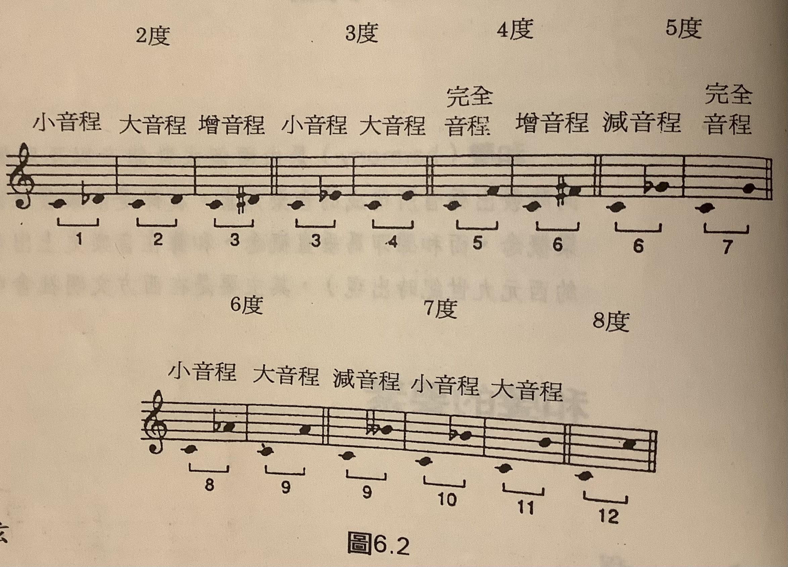

About Music
- 《Introduction to Music》Hugh M. Miller, Paul Taylor, Edgar Williams
西方藝術音樂基礎原理
音樂欣賞
(p.4-5)
4種音樂欣賞者類型:
- 被動型
- 音樂作為背景
- 餐廳, 電影, 運動場
- 感官型
- 享受聽覺樂趣
- 欣賞入門
- 情感型
- 因音樂帶動感情及情緒
- 理解型
- 專注音樂本身
- 明白所聽的音樂之特性及內容
- 養成對音樂藝術感受的主觀認知
(me: 佛教的色受想行識)
聲音
4種特性:
- 音高 Pitch
- 人耳可感測到的音高範圍: 20-20kHz (一般音樂: 30-4200Hz)
- 音值 Duration
- 強度 Intensity
- 漸強: crescendo
- 漸弱: diminuendo
- 音色 Timbre (音質)

記譜法

節奏及其符號
節奏的要素:
- 拍子 Beat
- 速度 Tempo
- 節拍 Meter
節奏記譜法
略
旋律
旋律的結構:
- 旋律通常可分爲較小的單位，稱為樂句（phrases）
- 如同語言中的停頓點或者詩篇中的一行詩
- 在一般音樂形式中，樂句至少包含一個完整的理念，並且往往由其他樂句以某些停頓形式加以襯托出來
- 這種停頓或多或少顯示了不同程度的終止感（有點像是文章中的逗號、頓號或冒號）；或顯示一種明確的結束（如同文章中的整句）
- 音樂中稱這個樂句句尾停頓的片語爲終止式（cadence）
旋律的構成組型:
動機 Motive
- 音樂中最小的結構單位是動機
- 動機是一個短短的旋律、節奏或者兼具旋律與節奏的數音
- 通常由六至八個音符組成
- 形成了音樂作品發展的結構
- 猶如語言中的前置句或其他的語意單位
- 動機是片斷的概念，不可能單獨存在；而是扮演作品中「細胞」的角色。
- 動機可運用在建築某段樂句、曲調、主題或較長的樂節上。
- 作曲家主要以下面幾種方式建立其主動的動機：
- （1）逐音地再述
- （2）以較高或較低的音程來再現〔例如，模進反復（sequential repetition）〕或者簡單的續奏（sequence），
- （3）利用其節奏特色與旋律特徵來轉化
- （4）結合其他的動機
- （5）以其他的聲音、樂器或技巧來加以模仿。 這些動機的循環，建構了一首完整的作品。
曲調 Tune
旋律最基本的形式。易於唱歌與記憶的簡要旋律。如：民謠、舞曲、流行音樂、一些交響曲的旋律片段。
主題 Theme
一首大型的音樂作品，譬如交響樂的樂章，通常會包含數個旋律以及旋律片段；在這之中，有些作品會被賦予一個中心的目的。我們稱包含作品中心思想的旋律——即作曲家創作的概念一爲主題（theme）。如同小說中主題作為故事發展與場景轉換的軸心一樣，音樂的主題也引領整首曲子的進展。就一般的概念來說，一首廣泛的作品表現出對於其主題生命性的探索—包含起源、互動、成長、蛻變，以及終極的命運。在作品的進行中，主題常會穿插在不同的片段中，成為作曲家表達其個性差異的探索工具。
音樂主題或許短得如同單一樂句，或許長得如整首曲調。
它主要是受到形式的導引（見第8章所探討的形式），或者它可採用較鬆散自在的動機旋律。它的特色主要隨著作品形式中所呈現出的角色變化而定。爲了保有主要的音樂概念，主題通常以一種易辨認的旋律、和聲、節奏，或者其他的特質再現於整首作品中。
和聲與調性
和聲(Harmony)的要素
音程
Quality of Interval:
- perfect
- major
- minor

和弦
調性 Tonality
(略)
西方藝術音樂概論
(> p.107)
TODO